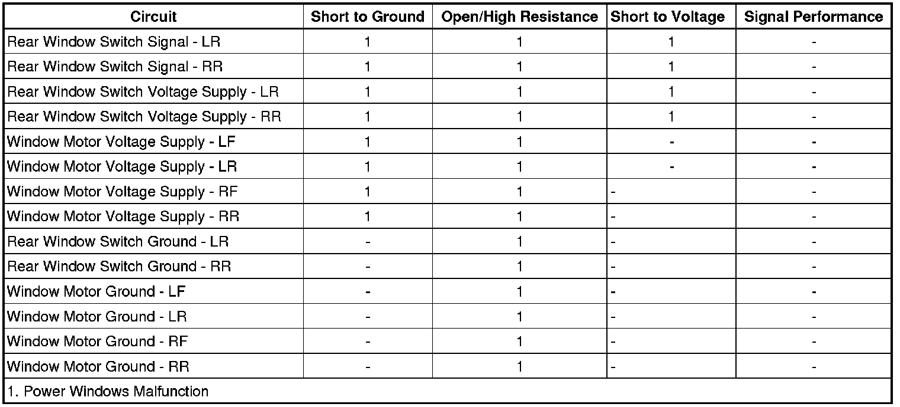

B320B
DTC B320A or B320B
Diagnostic Instructions
* Perform the Diagnostic System Check - Vehicle (Initial Inspection and Diagnostic Overview) prior to using this diagnostic procedure.
* Review Strategy Based Diagnosis (Initial Inspection and Diagnostic Overview) for an overview of the diagnostic approach.
* Diagnostic Procedure Instructions (Initial Inspection and Diagnostic Overview) provide an overview of each diagnostic category.
DTC Descriptors
DTC B320A 39
- Front Door Window Motor Internal Electronic Failure / Discard
DTC B320A 4B
- Front Door Window Motor Calibration Not Learned
DTC B320A 42
- Front Door Window Motor Calibration Data Set Not Programmed
DTC B320B 39
- Rear Door Window Motor Internal Electronic Failure / Discard
DTC B320B 4B
- Door Window Motor Calibration Not Learned
DTC B320B 42
- Rear Door Window Motor Calibration Data Set Not Programmed
Diagnostic Fault Information

Circuit/System Description
The front and rear power windows are controlled by the driver door module (DDM) and front passenger door module (PDM). The DDM and PDM each contain power window switches that are integrated into the module. The DDM contains the master power window switch that controls all power window operations. The DDM supplies the left rear power window switch with a 12-volt reference and signal circuit. The power window switch contained in the PDM controls the front passenger window operation only. The PDM supplies the right rear power window switch with a 12-volt reference and signal circuit.
When the driver power window switch is activated to a desired position, the DDM examines the request and checks for messages from other vehicle control modules prohibiting window movement. If no prohibitive messages have been received, the DDM will send a LIN serial data message to the driver door window motor to move the window to the desired position.
When the DDM receives a request to operate one of the right side passenger windows from the master switch, a GMLAN serial data message is sent to the PDM. The PDM examines the request and checks for messages from other vehicle control modules prohibiting the window movement. If no prohibitive messages have been received, the PDM will send a LIN serial data message to the appropriate window motor to move the window as requested.
The DDM and PDM supply there respective rear power window switches with a 12-volt reference and signal circuit. The rear power window switches contain separate resistors for each switch position. When a rear power window switch is activated, the associated door control module interprets the signal and checks for messages from other vehicle control modules prohibiting the window movement. If no prohibitive messages have been received, the door control module sends a LIN serial data message to the appropriate power window motor commanding the requested window position.
Conditions for Running the DTC
Battery voltage must be between 9-16 volts.
Conditions for Setting the DTC
Front Door, Rear Door, or Middle Door window motor not normalized/programmed or an internal malfunction has been detected by the DDM or PDM.
Action Taken When the DTC Sets
Power window express functions are disabled.
Conditions for Clearing the DTC
* The condition responsible for setting the DTC no longer exists.
* You issue a scan tool CLEAR DTCs command.
* A history DTC will clear once 50 malfunction-free ignition cycles have occurred.
Reference Information
Schematic Reference
Moveable Window Schematics ([1][2]Electrical Diagrams)
Connector End View Reference
Component Connector End Views (Connector Views)
Description and Operation
Power Windows Description and Operation (Power Windows Description and Operation)
Electrical Information Reference
* Circuit Testing (Component Tests and General Diagnostics)
* Connector Repairs (Component Tests and General Diagnostics)
* Testing for Intermittent Conditions and Poor Connections (Component Tests and General Diagnostics)
* Wiring Repairs (Component Tests and General Diagnostics)
Scan Tool Reference
Control Module References (Programming and Relearning)
Circuit/System Testing
1. Ignition ON, install a scan tool and clear the DTC.
2. Reprogram the affected power window motor.
3. Operate the vehicle within the conditions for running the DTC and verify the DTC does not reset.
• If the DTC resets, replace the inoperative power window motor.
Repair Instructions
Perform the Diagnostic Repair Verification (Verification Tests) after completing the diagnostic procedure.
* Front Side Door Window Regulator Replacement (Service and Repair)
* Rear Side Door Window Regulator Replacement (Service and Repair)
* Control Module References (Programming and Relearning) for power window motor replacement, setup and programming